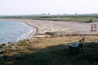
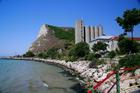
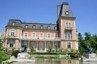
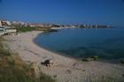
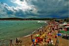
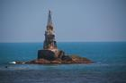

Bulgarian Beaches - Complete Black Sea Coast Guide
Welcome to Bulgaria's Black Sea
Welcome to the most comprehensive guide to Bulgarian beaches on the Black Sea. This site documents all major beach destinations along Bulgaria's 378-kilometer coastline, from Durankulak in the north to Rezovo in the south. Our extensive photo collection and detailed guides help you discover the perfect beach for your vacation.
About This Site
Note: During the distant 2007 Peter, my best friend, and I decided to travel around Bulgaria's Black Sea coast, take photos and make this site. This is a precious memory and archive from back then.
Discover Bulgarian Beaches
Bulgaria is a popular destination for summer holidays. Its coastline features thousands of beaches ranging from pristine natural coves to fully-developed resort complexes. Whether you seek vibrant nightlife, family-friendly facilities, romantic seclusion, or authentic Bulgarian coastal culture, you'll find your perfect beach here. Unfortunately, the Bulgarian beaches are ruined by the reckless business. Many of the photos here will probably remain just memories...
What Makes Bulgarian Beaches Special
Bulgarian Black Sea beaches offer exceptional value compared to Western Europe, with warm summer waters (22-25°C), fine golden sand, and diverse experiences. From the party atmosphere of Sunny Beach and Golden Sands to the untouched beauty of Silistar and Irakli, each destination has unique character. Prices remain affordable, locals are welcoming, and the coastal cuisine features fresh seafood and traditional Bulgarian specialties.
Plan Your Visit
Best Time: June-September for swimming; July-August busiest and warmest
Peak Season: Mid-July to mid-August (book early, expect crowds, higher prices)
Shoulder Season: June and September (excellent weather, fewer tourists, better value)
Budget: 50-100 BGN/day budget travel; 100-200 BGN/day mid-range comfort
Getting There: Airports in Burgas (BOJ) and Varna (VAR) serve international flights
Currency: Bulgarian Lev (BGN), approximately 2 BGN = 1 EUR
Browse All Beach Destinations
Below you'll find our complete collection of Bulgarian beach destinations, organized from north to south. Each location includes detailed descriptions, practical information, and extensive photo galleries to help you plan your perfect Black Sea vacation.
- 
Durankulak 
Krapets (aka Krapec)
Shabla
Tulenovo
Kamen Bryag
Rusalka
Kaliakra- 
Kavarna 
Balchik
Albena and Kranevo
Golden Sands
Riviera
Konstantin and Elena- 
Evksinograd 
Varna
Galata and Priboy
Kamchia
Shkorpilovtzi
Byala
Kara Dere (Karadere)
Obzor
Irakli and Emona
Elenite
Sveti Vlas
Sunny Beach
Nesebar
Ravda
Pomorie
Burgas
Gradina- 
Sozopol 
Kavatzi and Smokinya
Duni
Ropotamo
Primorsko
International Youth Center - Primorsko
Kiten
Lozenetz- 
Arapya 
Tsarevo
Varvara- 
Ahtopol 
Sinemorets
Silistar
Rezovo